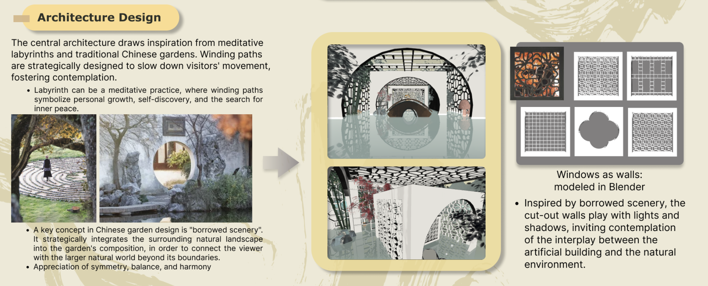

Garden: Eternity
The quest for eternal life has captivated humans for ages. Today, while the idea of digital immortality promises to extend human existence digitally beyond death, the centuries-old Taoist ethics instead propose a journey toward eternity from within. By transporting users to a timeless world where they can synchronize with the cosmo's cadence, this project envisions a Taoist practice of digital immortality. The project aims to introduce a post- humanistic perspective to digital immortality, challenging conventional notions of selfhood, consciousness, and the human-centric view of life.
- Form: VR immersive Environment
- Project Type: Individual Work
- My Role: Designer & Developer
- Tools in Use: Unity, Blender, Oculus Quest2
- Completed on: 15 Oct 2023
Insipration
The rapid advancement of technology has spurred a surge of efforts to prolong human existence, from genetic engineering to virtual immortality.
However, amidst these modern pursuits, the ancient Taoist philosophy instead sees eternity in transcending the self and aligning with the cosmo's rhythm. Intrigued, I seek inspiration in Taoist ideals to reimagine the essence of existence.
Research
Expected Outcome
The project aimed to provide a post-humanistic take on digital immortality, inspired by Taoist philosophy. It envisioned an immersive VR experience transporting users to a timeless world, facilitating a transcendental experience through meditative encounters, therebv reimagining a Taoist digital immortality.
Art Concept
Classic Chinese ink painting aesthetics- - infuse simplicity and elegance
- - meditative, avoiding digital overload
- - Use Taoist symbolism that conveys the ephemeral nature of life, eg. butterflies
- - Visualize Taoist view of the constant cycle of creation and destruction
Design Draft
Environment Design & Aesthetics
Architecture Design
Visualize Cyclical Time
Metaphoric Elements
Interactive Experience
Multi-platform Interations
Blender nodes documentation